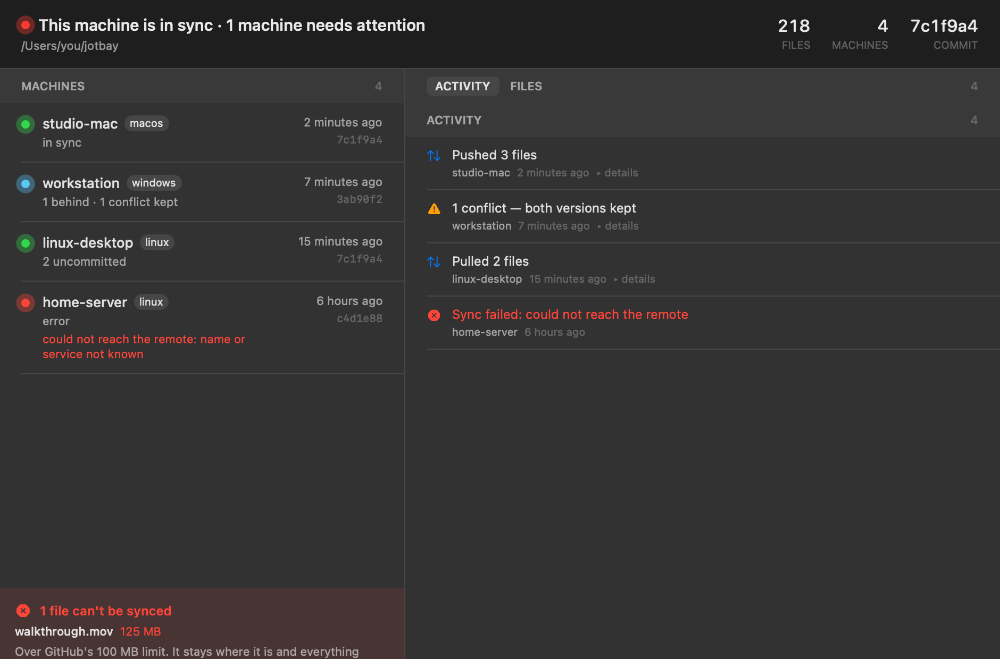
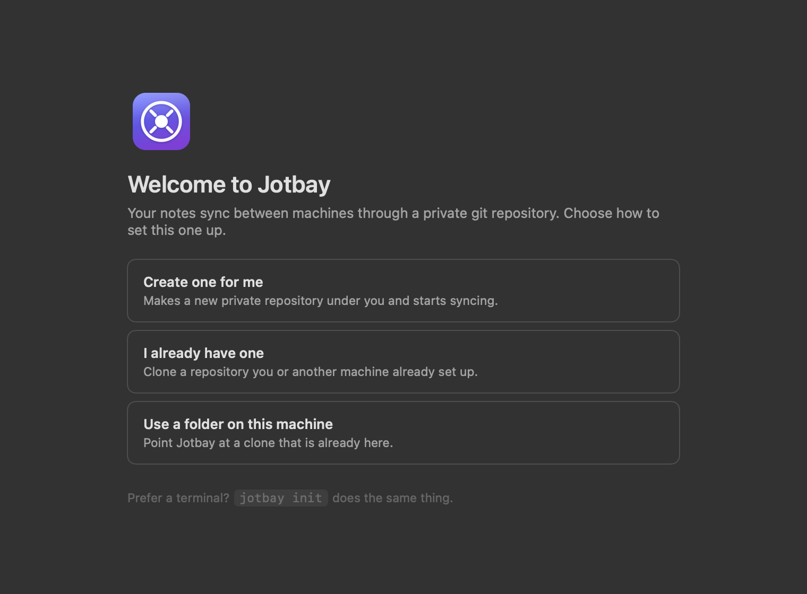

Jotbay copies a folder of markdown notes between your macOS, Windows, and Linux machines. It uses a private git repository. You are the owner of the repository.
macOS, Windows, Linux. MIT license.
Each installer contains the app and the jotbay command.
Jotbay needs git.
Open the disk image. Move Jotbay to the Applications folder. Apple signed and notarized this app.
brew trust nicglazkov/tap
brew install --cask nicglazkov/tap/jotbayHomebrew must trust a tap before it loads a cask from that tap. You do the first command one time.
The installer writes only to your user account. It does not ask for administrator permission. This installer has no code signature, and SmartScreen shows a warning. Click More info, then click Run anyway.
irm https://raw.githubusercontent.com/nicglazkov/jotbay/main/install/install.ps1 | iex
jotbay initOpen the DEB package with two clicks, or use
sudo apt install ./Jotbay_<version>_amd64.deb. Make the AppImage
executable, then start it.
curl -fsSL https://raw.githubusercontent.com/nicglazkov/jotbay/main/install/install.sh | bash
jotbay initOn a server that has no desktop, add --no-gui.


Jotbay syncs a folder of notes. It is not an editor. It is not a database. It is not a location for your images.
Save a file. Jotbay sends the file to your other machines in a few seconds. You do not push a button. You do not make a commit. The folder can contain all file types, but markdown notes are the primary function.
Jotbay puts an icon in the menu bar or in the system tray. The icon changes when a machine has a problem. The window shows the operations of each machine, and also the operations that failed.
You can change one note on two machines. Jotbay keeps the two versions. The version from the other machine keeps the file name. Jotbay saves your version in a second file. Jotbay does not stop, and it does not delete a version.
You can read a note in the app. The app cannot change a note, because the commands to write to a file are not in the app.

The first start asks one question. Where must Jotbay put your notes? Jotbay can make the private repository for you. It can clone a repository that you have. It can also use a clone that is already on this machine.


Jotbay puts your notes in a git repository. You are the owner of the repository. Most users have a private repository on GitHub. GitLab, Codeberg, a Forgejo server, and a bare repository on SSH also operate correctly. There is no Jotbay server, and you do not make an account.
Jotbay makes only one other connection. It examines its releases page for a new version. The privacy page gives the details.
No. The machines do not connect to each other. Each machine connects only to the git repository. A laptop on a hotel network and a desktop at your home operate in the same manner. You do not need a VPN, and you do not open a port.
Jotbay keeps the two versions. The version from the other machine keeps the file name.
Jotbay saves your version as note.conflict-<machine>-<time>.md.
You can correct the two files later. Jotbay does not stop the sync.
No. The setup asks where to put your notes, and Jotbay does the other steps. The word commit is not in the interface.
If you know git, the repository is a usual git repository. You can examine it, clone it, and use it in a script.
The folder can contain all file types. Jotbay copies each file byte for byte. The limits come from git, not from Jotbay. Git rejects a file of 100 MB or more. Jotbay does not make a commit for such a file, and it shows the file in the app.
The quantity of the changes is more important than the size. Git keeps a copy of each version of a binary file. If you change an image 20 times, the repository keeps the 20 versions. Each machine then downloads the 20 versions. Markdown notes, screenshots, and PDF files are satisfactory. Put video files in a different location.
Jotbay syncs two seconds after you stop. Usually a note is on your other machines in less than ten seconds. If you make no changes, Jotbay stops the checks. If you open a window, Jotbay asks the other machines for their status.
Two users cannot write in one note at the same time. Jotbay is a tool for the notes that you need on the next machine.
The Windows installer has no code signature. Microsoft Defender SmartScreen shows a warning for an unknown app. Click More info, then click Run anyway. The browser shows no warning, and the installer does not ask for administrator permission. The macOS app has a signature and a notarization from Apple.